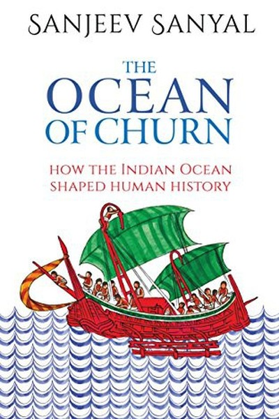

Library › Power & Strategy
The Ocean of Churn — Summary & Key Lessons

India's history rewritten from the Indian Ocean — geography is destiny.
📖 OPEN THE FULL INTERACTIVE BREAKDOWN →🌐 Read it in Hindi, Hinglish, Gujarati, Tamil & 22 more languages — free, with audio.
💡 The Big Idea
Sanjeev Sanyal — economist and popular historian — rewrites Indian history from the perspective of the Indian Ocean, arguing that India's story is not a landlocked tale of empires and invasions but an oceanic one of trade, migration, piracy and cultural churn. From the Harappan ports to the Chola navy, from the Arab dhow traders to the European companies, the Indian Ocean was the highway that made India rich, cosmopolitan and strategically vital. The book's deeper lesson: geography shapes destiny — the societies that understand and use their geography thrive, while those that ignore it decline. Sanyal's churn is not chaos; it is the dynamic, mixing force that has always made India — and any civilization — resilient.
🧠 The 6 Key Lessons
Lesson 1: The Sea Is the Highway: India Was Built on the Ocean
Part 1: The Beginnings
Sanyal's corrective to Indian history: from the earliest times, the Indian Ocean was not a barrier but a highway — the Harappan civilization traded with Mesopotamia by sea, and Indian textiles, spices and ideas travelled across the ocean for millennia. The ports of Gujarat, Kerala and the Coromandel coast were the Silicon Valleys of their age, connecting India to the world's wealth. The strategic lesson: nations that treat their seas as moats (defensive barriers) miss the game; nations that treat them as highways (economic and strategic assets) win it. India's decline began when its elites turned inward, abandoning the ocean that had made them rich.
📖 Example: Sanyal shows how the Chola empire — usually remembered as a land dynasty — actually built a formidable navy and conquered Sri Lanka and Southeast Asian kingdoms across the sea, collecting tribute and trade from an oceanic empire. The sea was their… Read the full example →
⚡ Do this: Apply the 'sea as highway' lens to your own position: what routes, networks or channels connect you to the wider world? Identify one 'ocean' you've been treating as a barrier — and start using it as a highway this quarter.
Lesson 2: Churn Is Strength: Mixing Creates Resilience
Part 2: The Churn
Sanyal's central metaphor: Indian history is a churn — peoples, ideas, goods and faiths constantly mixing in the oceanic cauldron. This churn, often described by traditional histories as invasion and chaos, was actually the source of India's resilience: a society that absorbs and adapts becomes stronger than one that resists all change. The societies that survive history's turbulence are the ones that metabolize new inputs — new people, new technologies, new ideas — rather than rejecting them. The lesson for individuals and organizations: don't fear disruption of your comfortable identity; the ability to churn — to absorb the new without losing your core — is the secret of longevity.
📖 Example: Sanyal traces how every wave of arrivals — Greeks, Arabs, Central Asians, Europeans — was absorbed into India's kaleidoscope, each adding a layer of technology, cuisine, language and trade that made the whole richer. The 'purity' that some nationalists… Read the full example →
⚡ Do this: List the last three 'outside' ideas or people you rejected. Re-examine one with fresh eyes: what could it add to your work or life if you absorbed rather than resisted it?
Lesson 3: The Merchant's World: Trade Builds More Than Armies
Part 3: The Traders
Sanyal's history is full of merchants — Gujarati banias, Arab dhows, Jewish traders, Chettiars — whose networks of trust moved goods and capital across oceans centuries before modern finance. His point: trade is a more durable force than conquest. Armies take territory and leave; trade networks build relationships that persist for generations. The merchant's world ran on reputation, contracts and mutual benefit — the original rule of law. The strategic lesson: in any ecosystem, the builders of exchange relationships (the connectors, the traders, the deal-makers) accumulate power and resilience that conquerors cannot match. Build the network, and the network defends you.
📖 Example: Sanyal describes how Indian merchant communities operated branch houses across the ocean — Surat to Mocha to Malacca — moving goods and credit through family networks and written contracts that European companies later borrowed. The merchants' trust… Read the full example →
⚡ Do this: Invest in your 'trade network' this month: one introduction you can facilitate, one relationship you can deepen, one contract you can make more reliable. The connectors compound.
Lesson 4: Geography Is Strategy: Position Determines Power
Part 4: The Geopolitics
Sanyal's geopolitical analysis: India's strategic weight has always come from its geography — the peninsula that commands the Indian Ocean's sea lanes, the choke points, the monsoon winds that made its ports inevitable stops. Every power that understood this geography (the Cholas, the Portuguese, the British) extracted advantage from it; every ruler who ignored it declined. The modern lesson: your 'geography' — your location, resources, networks and position — is a strategic asset to be consciously deployed, not a background fact. Strategy begins with an honest map of where you stand: your advantages, your chokepoints, your exposure. The powerful don't escape geography; they master it.
📖 Example: Sanyal shows how the British succeeded not by superior numbers but by controlling the ocean routes and the port cities — Calcutta, Bombay, Madras — turning India's own geography into a revenue machine, while inland powers that ignored the sea were… Read the full example →
⚡ Do this: Draw your personal 'geography map': your location, your networks, your unique resources, and your chokepoints (things others control). Write one strategy that leverages the strongest asset and defends the weakest point.
Lesson 5: The Chokepoint Lesson: Whoever Controls the Narrow Pass Controls the Flow
Part 4: The Geopolitics
The Indian Ocean is full of chokepoints — the Strait of Malacca, Hormuz, Bab-el-Mandeb — narrow passages where the world's trade must squeeze through, and whoever controls them taxes or blocks the flow of everyone. Sanyal's history shows how chokepoints made small states (and pirate fleets) disproportionately powerful: a narrow pass amplifies whoever sits on it. The strategic lesson for business and life: identify the chokepoints in your domain — the bottleneck skills, the key relationships, the scarce resources — and either control one or know who does. Power concentrates at narrow passages; the person who owns a chokepoint owns the flow through it.
📖 Example: Sanyal recounts how the Portuguese, holding a few strategic ports and the knowledge of sea routes, taxed the entire Indian Ocean trade — a tiny force extracting wealth from a vast ocean, purely by controlling the narrow passes and the information. Read the full example →
⚡ Do this: Identify the chokepoint in your industry or career: the scarce skill, the gatekeeper, the key platform. Take one step this month to control a small chokepoint (a certification, a key relationship, a proprietary process).
Lesson 6: The Ocean of Churn, the Nation of Absorbers: Lessons for the Future
Part 5: The Future
Sanyal ends by turning history into prediction: India's future, like its past, will be decided by how well it navigates the oceanic churn — the flows of trade, capital, people and ideas in a world that is reconnecting along the Indian Ocean rim. His lessons for the nation apply to anyone: stay open to the flows (closed systems stagnate), invest in maritime/connective capability (the connectors win), and keep absorbing and adapting (the churn is the strength). The civilizations that survive are the ones that treat change as their native element rather than a threat. In a churning world, the adaptive absorber is the only safe strategy.
📖 Example: Sanyal points to the emerging 'Indo-Pacific' era where India's geographic position — at the junction of the world's busiest sea lanes — makes it central again, provided it consciously chooses the open, churning, adaptive path rather than the inward one. Read the full example →
⚡ Do this: Choose one 'flow' to open yourself to this year: a new language, a new market, a new community, a new technology. The absorber's rule: say yes to the unfamiliar once a month, and let the churn make you stronger.
✅ 5-Step Action Plan
- Identify one 'sea as highway' — a channel you've treated as a barrier — and use it this quarter.
- Absorb one previously rejected outside idea: study it, don't resist it.
- Make one investment in your trade network (introduction, contract, deepening).
- Draw your geography map: assets, chokepoints, exposures — and one strategy from it.
- Open yourself to one new flow this month (language, market, community, technology).
💬 Best Quotes from The Ocean of Churn
- “India's history was written on the waves before it was written on stone.”
- “Churn is not chaos — it is how civilizations stay alive.”
- “Whoever controls the chokepoint controls the flow.”
Interactive version: mark lessons as read, listen in your language, share quote cards.